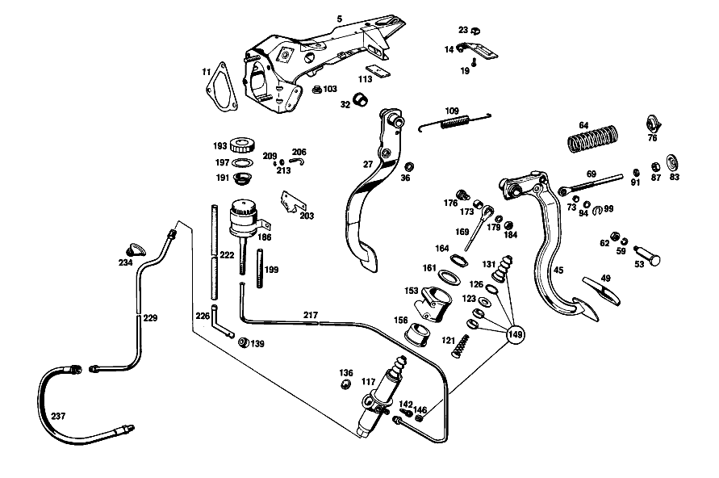

| № | Артикул | Название | Кол. | Примечание | Ограничение |
|---|---|---|---|---|---|
| 5 | A 108 290 00 31 | ПОДШИПНИК | 1 | Рулевое управление: ВлевоКоробка передач [001] UP TO CHASSIS 001858 EXCEPT FOR 001473,001548,001702,001722,001786,001797,001801,001804,001853-001857 | |
| 11 | A 108 431 01 80 | уплотнение | 1 | [002] FROM CHASSIS 001859 ALSO INSTALLED ON 001473,001548,001702,001722,001786,001797,001801,001804,001853-001857 | |
| 14 | A 108 260 01 62 | ДЕРЖАТЕЛЬ | 1 | GEAR INDICATOR WIRE CABLE Рулевое управление: ВлевоАвтоматическая коробка переключения передач [001] UP TO CHASSIS 001858 EXCEPT FOR 001473,001548,001702,001722,001786,001797,001801,001804,001853-001857 | |
| 19 | N 007981 002325 | Шуруп | 3 | GEAR INDICATOR WIRE CABLE Рулевое управление: ВлевоАвтоматическая коробка переключения передач [001] UP TO CHASSIS 001858 EXCEPT FOR 001473,001548,001702,001722,001786,001797,001801,001804,001853-001857 | |
| 23 | A 000 990 27 91 | ГАЙКОДЕРЖАТЕЛЬ | - | ||
| 23 | A 000 990 22 91 | ГАЙКОДЕРЖАТЕЛЬ | - | ||
| 23 | A 001 990 67 91 | Гайкодержатель | 2 | [002] FROM CHASSIS 001859 ALSO INSTALLED ON 001473,001548,001702,001722,001786,001797,001801,001804,001853-001857 [415] ПРИМЕЧ. ПО ЗАМЕНЕ ПРИМЕНИМО ТОЛЬКО ДЛЯ СТОЯЩИХ РЯДОМ ПОЗИЦИЙ | |
| 27 | A 110 290 35 18 | ПЕДАЛЬ | 1 | [001] UP TO CHASSIS 001858 EXCEPT FOR 001473,001548,001702,001722,001786,001797,001801,001804,001853-001857 | |
| 27 | A 110 290 35 18 | ПЕДАЛЬ | 1 | Рулевое управление: Вправо [002] FROM CHASSIS 001859 ALSO INSTALLED ON 001473,001548,001702,001722,001786,001797,001801,001804,001853-001857 | |
| 32 | A 110 291 05 50 | - Втулка подшипника | - | ||
| 32 | A 124 292 00 50 | - Втулка подшипника | 2 | ||
| 36 | A 110 292 01 50 | - втулка | 2 | ||
| 49 | A 107 291 01 82 | Чехол | 0 | ||
| 49 | A 107 291 01 82 | Чехол | 1 | ПЕДАЛЬ ТОРМОЗА | |
| 49 | A 107 291 01 82 | Чехол | 1 | ПЕДАЛЬ СЦЕПЛЕНИЯ Коробка передач | |
| 53 | A 110 291 05 74 | БОЛТ | 1 | Автоматическая коробка переключения передач | |
| 59 | N 912004 010102 | Пружинное кольцо | 1 | ||
| 62 | N 000936 010003 | ГАЙКА | 1 | ||
| 73 | A 110 291 07 50 | втулка | 2 | Коробка передач | |
| 76 | A 107 291 00 91 | Тарелка пружины | 1 | Коробка передач | |
| 83 | A 111 291 04 91 | Тарелка пружины | 1 | Коробка передач | |
| 87 | N 070615 010004 | Гайка | 1 | Коробка передач [402] БОЛЬШЕ НЕ ПОСТАВЛЯЕТСЯ | |
| 91 | N 007967 010001 | Гайка | 1 | Коробка передач [402] БОЛЬШЕ НЕ ПОСТАВЛЯЕТСЯ | |
| 94 | A 110 990 17 40 | ШАЙБА | 1 | Коробка передач [001] UP TO CHASSIS 001858 EXCEPT FOR 001473,001548,001702,001722,001786,001797,001801,001804,001853-001857 | |
| 99 | A 000 994 04 10 | ПРЕДОХРАНИТЕЛЬ | 1 | Коробка передач [001] UP TO CHASSIS 001858 EXCEPT FOR 001473,001548,001702,001722,001786,001797,001801,001804,001853-001857 | |
| 103 | A 111 291 00 86 | Упор | 1 | Коробка передач | |
| 109 | A 107 993 04 10 | пружина | 1 | ||
| 113 | A 111 462 00 75 | ШАЙБА | - | [402] БОЛЬШЕ НЕ ПОСТАВЛЯЕТСЯ [009] НЕ ИСПОЛЬЗУЕТСЯ | |
| 126 | A 000 994 33 35 | - Пружинное кольцо | 1 | Коробка передач | |
| 131 | A 000 295 15 83 | - Защитный колпачок | 1 | Коробка передач | |
| 139 | A 000 431 09 35 | - СОЕДИНИТЕЛЬ | 1 | Коробка передач [002] FROM CHASSIS 001859 ALSO INSTALLED ON 001473,001548,001702,001722,001786,001797,001801,001804,001853-001857 | |
| 142 | A 000 420 10 55 | - Клапан выпуска воздуха | 1 | Коробка передач | |
| 146 | A 000 421 71 87 | - КОЛПАЧОК | - | Коробка передач | |
| 146 | A 000 421 08 87 | - Защитный колпачок | 1 | Коробка передач | |
| 156 | A 108 295 00 50 | Упорное кольцо | 2 | Коробка передач | |
| 161 | A 108 295 00 76 | Диск | 1 | Коробка передач | |
| 164 | A 001 994 32 41 | ПРЕДОХРАНИТЕЛЬ | 1 | Коробка передач | |
| 169 | A 110 290 18 39 | Тяга привода | 1 | Коробка передач | |
| 173 | A 110 295 02 50 | - Втулка подшипника | 1 | Коробка передач | |
| 176 | A 094 295 01 00 | болт | - | Коробка передач | |
| 176 | A 115 295 01 72 | Эксцентриковая гайка | 1 | Коробка передач | |
| 179 | N 000127 008203 | Пружинное кольцо | 1 | Коробка передач | |
| 184 | N 000936 008012 | Гайка | 1 | Коробка передач | |
| 191 | A 000 431 43 34 | Сетка | 1 | Коробка передач [001] UP TO CHASSIS 001858 EXCEPT FOR 001473,001548,001702,001722,001786,001797,001801,001804,001853-001857 | |
| 199 | A 005 997 83 82 | ШЛАНГ | 1 | Коробка передач | |
| 203 | A 115 295 09 40 | ДЕРЖАТЕЛЬ | 1 | Коробка передач [001] UP TO CHASSIS 001858 EXCEPT FOR 001473,001548,001702,001722,001786,001797,001801,001804,001853-001857 | |
| 206 | A 108 295 01 24 | БОЛТ НАТЯЖНОЙ | 2 | Коробка передач [001] UP TO CHASSIS 001858 EXCEPT FOR 001473,001548,001702,001722,001786,001797,001801,001804,001853-001857 | |
| 209 | A 094 990 68 10 | Пружинное кольцо | 2 | Коробка передач [001] UP TO CHASSIS 001858 EXCEPT FOR 001473,001548,001702,001722,001786,001797,001801,001804,001853-001857 | |
| 213 | N 000934 006007 | Гайка | 2 | Коробка передач [001] UP TO CHASSIS 001858 EXCEPT FOR 001473,001548,001702,001722,001786,001797,001801,001804,001853-001857 | |
| 222 | A 009 997 38 82 | Шланг | 1 | ДОЛИВОЧНЫЙ БАЧОК К ГЛАВН.ЦИЛИНДРУ; 7X3,5MM Коробка передач [404] ЗАКАЗЫВАТЬ ПОГОННЫМИ МЕТРАМИ [002] FROM CHASSIS 001859 ALSO INSTALLED ON 001473,001548,001702,001722,001786,001797,001801,001804,001853-001857 | |
| 226 | A 000 295 02 36 | ЭЛЕМЕНТ ПРОМЕЖУТОЧНЫЙ | 1 | ДОЛИВОЧНЫЙ БАЧОК К ГЛАВН.ЦИЛИНДРУ Коробка передач [002] FROM CHASSIS 001859 ALSO INSTALLED ON 001473,001548,001702,001722,001786,001797,001801,001804,001853-001857 | |
| 229 | A 110 290 30 13 | ПРОВОД | 1 | FROM CLUTCH MASTER CYLINDER TO CONNECTING HOSE Рулевое управление: ВлевоКоробка передач | |
| 234 | A 110 997 14 31 | ЗАГЛУШКА РЕЗЬБОВАЯ | 1 | Коробка передач | |
| 237 | A 000 295 05 35 | Шланг сцепления | 1 | FROM PIPE LINE TO CLUTCH SLAVE CYLINDER Рулевое управление: ВлевоКоробка передач [001] UP TO CHASSIS 001858 EXCEPT FOR 001473,001548,001702,001722,001786,001797,001801,001804,001853-001857 | |
| A 108 290 03 31 | ПОДШИПНИК | 1 | Рулевое управление: ВлевоКоробка передач [002] FROM CHASSIS 001859 ALSO INSTALLED ON 001473,001548,001702,001722,001786,001797,001801,001804,001853-001857 | ||
| A 108 290 01 31 | ПОДШИПНИК | 1 | Рулевое управление: ВправоКоробка передач [001] UP TO CHASSIS 001858 EXCEPT FOR 001473,001548,001702,001722,001786,001797,001801,001804,001853-001857 [402] БОЛЬШЕ НЕ ПОСТАВЛЯЕТСЯ | ||
| A 108 290 02 31 | ПОДШИПНИК | 1 | Рулевое управление: ВправоКоробка передач [002] FROM CHASSIS 001859 ALSO INSTALLED ON 001473,001548,001702,001722,001786,001797,001801,001804,001853-001857 | ||
| A 109 290 00 31 | ПОДШИПНИК | 1 | Автоматическая коробка переключения передач [001] UP TO CHASSIS 001858 EXCEPT FOR 001473,001548,001702,001722,001786,001797,001801,001804,001853-001857 [402] БОЛЬШЕ НЕ ПОСТАВЛЯЕТСЯ | ||
| A 108 290 05 33 | ДЕРЖАТЕЛЬ | 1 | Автоматическая коробка переключения передач [002] FROM CHASSIS 001859 ALSO INSTALLED ON 001473,001548,001702,001722,001786,001797,001801,001804,001853-001857 | ||
| A 108 431 00 80 | ПРОКЛАДКА УПЛОТНИТЕЛЬНАЯ | 1 | [001] UP TO CHASSIS 001858 EXCEPT FOR 001473,001548,001702,001722,001786,001797,001801,001804,001853-001857 | ||
| A 108 290 00 18 | ПЕДАЛЬ | 1 | ТОРМОЗ Рулевое управление: Влево [002] FROM CHASSIS 001859 ALSO INSTALLED ON 001473,001548,001702,001722,001786,001797,001801,001804,001853-001857 | ||
| A 110 290 52 16 | ПЕДАЛЬ | 1 | СЦЕПЛЕНИЕ Рулевое управление: ВлевоКоробка передач [001] UP TO CHASSIS 001858 EXCEPT FOR 001473,001548,001702,001722,001786,001797,001801,001804,001853-001857 | ||
| A 108 290 04 16 | ПЕДАЛЬ | 1 | СЦЕПЛЕНИЕ Рулевое управление: ВлевоКоробка передач [002] FROM CHASSIS 001859 ALSO INSTALLED ON 001473,001548,001702,001722,001786,001797,001801,001804,001853-001857 | ||
| A 108 290 01 16 | ПЕДАЛЬ | 1 | СЦЕПЛЕНИЕ Рулевое управление: ВправоКоробка передач [001] UP TO CHASSIS 001858 EXCEPT FOR 001473,001548,001702,001722,001786,001797,001801,001804,001853-001857 [402] БОЛЬШЕ НЕ ПОСТАВЛЯЕТСЯ | ||
| A 108 290 07 16 | ПЕДАЛЬ | 1 | СЦЕПЛЕНИЕ Рулевое управление: ВправоКоробка передач [002] FROM CHASSIS 001859 ALSO INSTALLED ON 001473,001548,001702,001722,001786,001797,001801,001804,001853-001857 | ||
| A 110 291 05 50 | - Втулка подшипника | - | Коробка передач | ||
| A 124 292 00 50 | - Втулка подшипника | 2 | Коробка передач | ||
| A 110 291 06 74 | БОЛТ | 1 | Рулевое управление: ВлевоКоробка передач [001] UP TO CHASSIS 001858 EXCEPT FOR 001473,001548,001702,001722,001786,001797,001801,001804,001853-001857 | ||
| A 110 291 06 74 | БОЛТ | 1 | Рулевое управление: ВправоКоробка передач | ||
| A 108 291 00 74 | БОЛТ | 1 | Рулевое управление: ВлевоКоробка передач [002] FROM CHASSIS 001859 ALSO INSTALLED ON 001473,001548,001702,001722,001786,001797,001801,001804,001853-001857 | ||
| A 115 993 79 02 | Нажимная пружина | 1 | Коробка передач | ||
| A 115 290 13 39 | ТЯГА | 1 | Коробка передач | ||
| N 000125 008407 | ШАЙБА | 1 | Коробка передач [002] FROM CHASSIS 001859 ALSO INSTALLED ON 001473,001548,001702,001722,001786,001797,001801,001804,001853-001857 | ||
| N 006799 006003 | Стопорная шайба | 1 | 6MM Коробка передач [002] FROM CHASSIS 001859 ALSO INSTALLED ON 001473,001548,001702,001722,001786,001797,001801,001804,001853-001857 | ||
| N 000931 008254 | Винт | - | |||
| N 304014 008002 | Винт с 6-гранной головкой | 1 | M8X65\-8.8 | ||
| N 009021 008205 | Шайба | - | |||
| N 009021 008213 | Шайба | 1 | 8 MM | ||
| N 000000 003250 | Шайба | 1 | |||
| N 000433 008406 | Шайба | 1 | |||
| N 000137 008204 | Пружинная шайба | - | |||
| N 000137 008212 | Пружинная шайба | 1 | |||
| N 000934 008010 | Гайка | - | |||
| N 304032 008006 | Шестигранная гайка | 1 | M8 | ||
| A 000 295 52 06 | Главный цилиндр | 1 | 3/4" DIA. X 34 MM STROKE Коробка передач [001] UP TO CHASSIS 001858 EXCEPT FOR 001473,001548,001702,001722,001786,001797,001801,001804,001853-001857 | ||
| A 000 295 78 06 | Главный цилиндр | 1 | 3/4" DIA. X 34 MM STROKE Коробка передач [002] FROM CHASSIS 001859 ALSO INSTALLED ON 001473,001548,001702,001722,001786,001797,001801,001804,001853-001857 | ||
| A 000 586 15 29 | ремкомплект | 1 | Коробка передач | ||
| A 115 295 02 40 | ДЕРЖАТЕЛЬ | 1 | Коробка передач | ||
| A 115 295 03 40 | Держатель | 1 | Коробка передач | ||
| N 000931 006115 | Винт | - | Коробка передач | ||
| N 000933 006151 | Винт | 2 | Коробка передач | ||
| N 000137 006204 | Пружинная шайба | 2 | ГЛАВНЫЙ ЦИЛИНДР НА КРОНШТЕЙНЕ Коробка передач | ||
| N 000934 006007 | Гайка | 2 | ГЛАВНЫЙ ЦИЛИНДР НА КРОНШТЕЙНЕ Коробка передач | ||
| A 115 290 01 15 | БАЧОК | 1 | Коробка передач [001] UP TO CHASSIS 001858 EXCEPT FOR 001473,001548,001702,001722,001786,001797,001801,001804,001853-001857 | ||
| A 002 997 67 82 | ШЛАНГ | 1 | Коробка передач [001] UP TO CHASSIS 001858 EXCEPT FOR 001473,001548,001702,001722,001786,001797,001801,001804,001853-001857 | ||
| N 914128 004303 | Шуруп | 2 | 4.8X9.5 MM Коробка передач [001] UP TO CHASSIS 001858 EXCEPT FOR 001473,001548,001702,001722,001786,001797,001801,001804,001853-001857 | ||
| N 000125 005306 | ШАЙБА | 2 | Коробка передач [001] UP TO CHASSIS 001858 EXCEPT FOR 001473,001548,001702,001722,001786,001797,001801,001804,001853-001857 | ||
| A 108 290 07 13 | ПРОВОД | - | Рулевое управление: ВлевоКоробка передач | ||
| A 113 290 17 13 | ПРОВОД | 1 | РАСШИРИТ. БАЧОК К ЦИЛ. ДАТЧИКУ Рулевое управление: ВлевоКоробка передач [001] UP TO CHASSIS 001858 EXCEPT FOR 001473,001548,001702,001722,001786,001797,001801,001804,001853-001857 | ||
| A 108 290 08 13 | ПРОВОД | - | Рулевое управление: ВправоКоробка передач | ||
| A 113 290 17 13 | ПРОВОД | 1 | РАСШИРИТ. БАЧОК К ЦИЛ. ДАТЧИКУ Рулевое управление: ВправоКоробка передач [001] UP TO CHASSIS 001858 EXCEPT FOR 001473,001548,001702,001722,001786,001797,001801,001804,001853-001857 | ||
| A 003 988 03 78 | Скоба | 1 | CONNECTING HOSE TO BRAKE BOOSTER Коробка передач | ||
| A 110 290 33 13 | ПРОВОД | - | Рулевое управление: ВправоКоробка передач | ||
| A 109 320 76 53 | ПРОВОД | 1 | FROM CLUTCH MASTER CYLINDER TO CONNECTING HOSE Рулевое управление: ВправоКоробка передач [409] ПРИ МОНТАЖЕ ПОДОГНАТЬ ПО МЕСТУ | ||
| A 002 988 77 78 | Скоба | 1 | PIPE LINE TO BRAKE BOOSTER Рулевое управление: ВлевоКоробка передач [001] UP TO CHASSIS 001858 EXCEPT FOR 001473,001548,001702,001722,001786,001797,001801,001804,001853-001857 | ||
| N 072571 001034 | Хомут | 1 | PIPE LINE TO TOEBOARD Коробка передач [002] FROM CHASSIS 001859 ALSO INSTALLED ON 001473,001548,001702,001722,001786,001797,001801,001804,001853-001857 | ||
| N 007976 004216 | Шуруп | 1 | PIPE LINE TO TOEBOARD; 4,8X13 Коробка передач [002] FROM CHASSIS 001859 ALSO INSTALLED ON 001473,001548,001702,001722,001786,001797,001801,001804,001853-001857 | ||
| N 073379 006101 | Шланг | NB | PIPE LINE TO TOEBOARD Коробка передач [002] FROM CHASSIS 001859 ALSO INSTALLED ON 001473,001548,001702,001722,001786,001797,001801,001804,001853-001857 | ||
| A 110 987 00 44 | ДИСК | - | Автоматическая коробка переключения передач | ||
| A 113 987 00 44 | Диск | 1 | 20.5 MM Автоматическая коробка переключения передач | ||
| A 000 295 07 35 | Шланг сцепления | 1 | Рулевое управление: ВправоКоробка передач [001] UP TO CHASSIS 001858 EXCEPT FOR 001473,001548,001702,001722,001786,001797,001801,001804,001853-001857 | ||
| A 000 295 22 35 | Шланг сцепления | 1 | Коробка передач [002] FROM CHASSIS 001859 ALSO INSTALLED ON 001473,001548,001702,001722,001786,001797,001801,001804,001853-001857 | ||
| N 073379 006101 | Шланг | 2 | 30mm Коробка передач [001] UP TO CHASSIS 001858 EXCEPT FOR 001473,001548,001702,001722,001786,001797,001801,001804,001853-001857 | ||
| N 072571 001025 | Хомут | 1 | СОЕДИНИТ. ШЛАНГ Коробка передач [001] UP TO CHASSIS 001858 EXCEPT FOR 001473,001548,001702,001722,001786,001797,001801,001804,001853-001857 | ||
| N 007976 004205 | Шуруп | 1 | СОЕДИНИТ. ШЛАНГ Коробка передач [001] UP TO CHASSIS 001858 EXCEPT FOR 001473,001548,001702,001722,001786,001797,001801,001804,001853-001857 | ||
| A 112 295 01 60 | УПЛОТНИТ. КОЛЬЦО | 1 | СОЕДИНИТ. ШЛАНГ Рулевое управление: ВправоКоробка передач [001] UP TO CHASSIS 001858 EXCEPT FOR 001473,001548,001702,001722,001786,001797,001801,001804,001853-001857 |
Позиций: 116 · подписано на схемах: 54 · колесо — плавный зум в курсор, перетаскивание — пан, двойной клик — зум, клик по артикулу — скопировать · наведите на строку или цифру на схеме — подсветка связки, клик — закрепить.